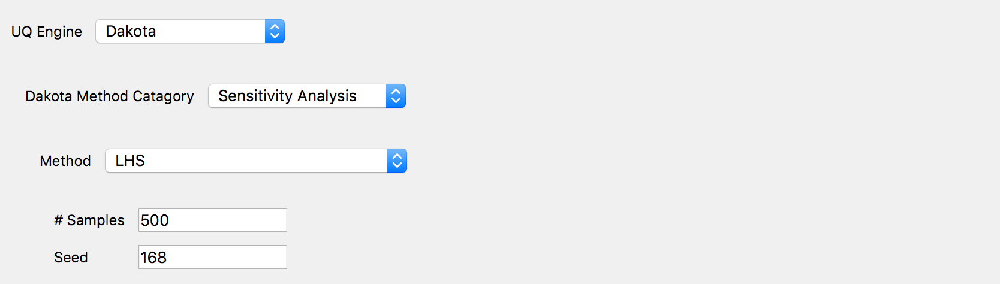

Sensitivity analysis
Global sensitivity analysis is used to quantify the contribution of each input variable to the uncertainty in QoI. Using the global sensitivity indices, users can set preferences between random variables considering both inherent randomness and its propagation through the model. Global sensitivity analysis helps users understand the overall impact of different sources of uncertainties and their interactions and accelerate UQ computations by focusing on dominant dimensions or screening out trivial input variables. Sensitivity index can also be used to identify the input variables for which additional experimentation/research may reduce the uncertainty in the initial specification.
Sobol indices are widely used variance-based global sensitivity measures with two types: main effect and total effect sensitivity indices. The main effect index quantifies the fraction of variance in QoI attributed to specific input random variable(s) but without considering the interactive effect with other input variables. The total effect index, on the other hand, additionally takes the interactions into account.
Given an output of a model \(y=g(\boldsymbol{x})\) and input random variables \(\boldsymbol{x}=\{x_1,x_2, \cdots ,x_d\}\), the first-order main and total effect indices of each input variable are defined as
respectively, where \(\boldsymbol{x}_{\sim i}\) indicates the set of all input variables except \(x_i\). Currently, this engine supports first-order main and total effect indices.
Dakota Sensitivity Analysis is based on the efficient Monte Carlo method (see the paper of [Weirs12] referred in Dakota Technical manual [Adams20]). The user has two options to generate the samples on which the statistics are created: Monte Carlo and Latin Hypercube Sampling (LHS). For both, they are required, as shown in the figure below, to specify the number of samples and a seed.
The sensitivity analysis results will show both the main effect and total effect Sobol indices for each RV for each of the QoI.

Sensitivity analysis input panel.
Note
When the associated FEM model is computationally expensive, the user should consider that the actual number of the simulation runs is larger than the number of samples specified in the input panel. The exact number of simulation runs are NS*(2+NRV)
NS = number of samples specified by the user
NRV = number of random variables
Weirs, J. R. Kamm, L. P. Swiler, M. Ratto, S. Tarantola, B. M. Adams, W. J. Rider, and M. S Eldred. Sensitivity analysis techniques applied to a system of hyperbolic conservation laws. Reliability Engineering and System Safety, 107:157–170, 2012
Adams et al., DAKOTA, a multilevel parallel object-oriented framework for design optimization, parameter estimation, uncertainty quantification, and sensitivity analysis: version 6.12 user’s manual. Sandia National Laboratories, Tech. Rep. SAND2020-5001 (2020).